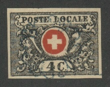
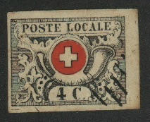
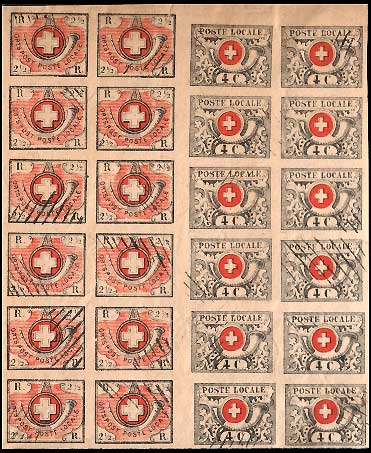
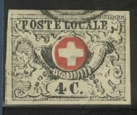
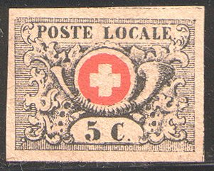
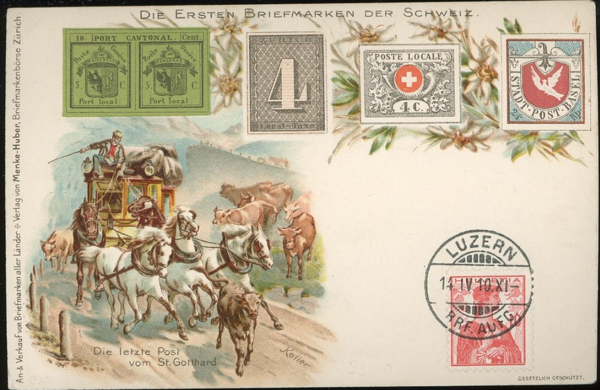
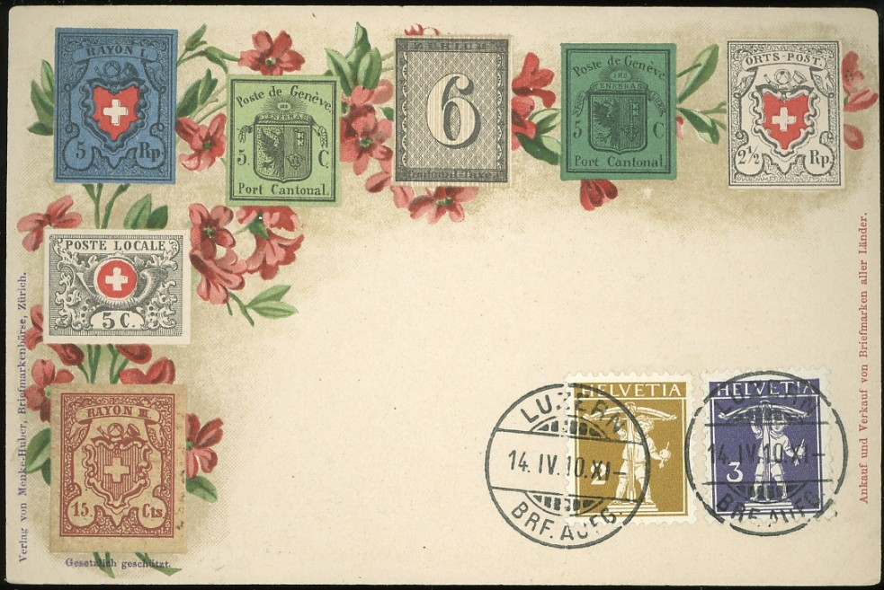
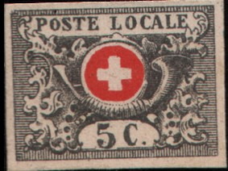

Return To Catalogue - Vaud, part 1 - Basel - Geneva - Neuchatel - Winterthur - Zurich - Switzerland overview
Note: on my website many of the
pictures can not be seen! They are of course present in the
catalogue;
contact me if you want to purchase the catalogue.
For more forgeries and genuine stamps of Vaud, click here (Vaud, part 1).
Fournier forgeries:

Compare the position of the ornaments in the left
upper corner (under the 'PO') with a genuine copy. The above
forgeries do NOT resemble the Fournier forgeries as shown in 'The
Fournier album of philatelic forgeries'. Fournier probably made
(or sold) more than one type of forgeries. I have seen a whole
sheet (5x10) of both values of these forgeries (already
pre-cancelled), in the left lower corner of the 5 c sheet a
tete-beche stamp (=upside down) can be seen (see picture above).
The cancels always seem to be one of the above (grid, lines or
rozette, all in black, but I've also seen a red rozette and a
blue grid cancel).
The following forgery is probably a 1st choice Fournier forgery
as listed in his 1914 pricelist and as also indicated in the
Fournier Album of Philatelic Forgeries:


Front and backside of a Fournier forgery with
"FAC-SIMILE" overprint at the back, originating from a
Fournier Album
Some more Fournier forgeries with blue "FAC-SIMILE"
printed at the backside.
Fournier forgery on an envelope.


Fournier forgeries as they can be found in the Fournier Album.

In the above forgery, the lines on the posthorn are oblique. Also, there is no dot behind the '4 c'.
In the following forgeries, there is a black line around the red circle and around the white cross; in the genuine stamps there are no such black lines.

(Extra line below value label and black outline on cross)
I think the above forgeries are the first forgeries described in Album weeds; there are only 12 turns of the ribbon, there is a black outline on the white cross and on the red circle. A horizontal line can be seen between the value label and the bottom of the stamp (there is no such line in a genuine stamp, see enlarged pictures above for more details). I've seen forgeries of Neuchatel, together with some 5 c "ORTSPOST" stamps, 4 c and 5 c Vaud stamps and the Winterthur stamps (essentially all stamps that were printed in black and red). Click here for such a sheet.

Above a sheet of forgeries from such a sheet, where these forgeries are printed together with the first Winterthur forgeries.


Another forgery set with a black cross.

The lower right and left ornaments are too far down in the above forgery. There are many other differences with the genuine stamps. I have seen this forgery with a cancel consisting of black parallel bars.
Sperati forgeries:


Sperati produced 2 different forgeries of this stamp, the 2 left
ones are listed as Reproduction 'A' by the British Philatelic
Association, the 2 right ones as Reproduction 'B'.
Sperati forgeries are very difficult to recognize in general, the differences with genuine stamps are microscopic (even experts were fooled at first!). They are quite expensive.
A page with Sperati 'reproductions' in black: top row: Vaud
central cross negative print and normal print; Vaud 4 c type A
and type B. Second row 5 c and 4 c negative print and negative
cross print. Third row: Neuchatel stamps (without center). Fourth
row: central crosses of the Neuchatel forgeries.


Other Sperati forgerie.
Peter Winter forgeries:

A Peter Winter forgery, the design is correct in every detail,
produced around 1980. In the 5 c there is a black spot to the
bottom left of the white cross (inside the horn, above the
"5").
These Winter forgeries also exist on fake letters:
The cancel on these forged envelopes always seems to be: "GENEVE 25 MARS 50 8 1/2 S" (in red). Another Winter forgery with a black rozette cancel and a 4 c forgery with a red cancel:


(Winter forgeries)
In the 5 c Winter forgery, there is a black dot penetrating the left bottom part of the central red circle. I haven't seen such a dot on a genuine 5 c stamp.
I've also seen a horizontal pair of 5 c Peter Winter forgeries with a red cancel "LUZERN 14 AVRIL 1862".

Photo-forgery made in the 1930's, note the small 'dots' of the
photo

A Menke-Huber postcard with replicas
of Vaud and Neuchatel


A cut of such a Menke-Huber postcard,
note the strange "5".

Another forgery
There are also forged 4 c stamps, made by erasing the "5 c" from a genuine stamp and then replacing it by "4 c". More information can be found in the American Philatelist February 1984 in an article by Fred R. Lesser.
{kind=link}
{kind=link}
{kind=link}